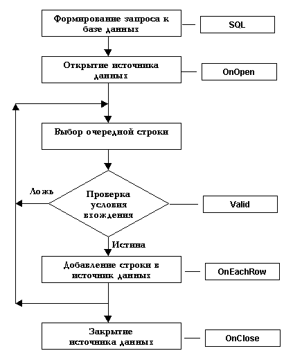

---
layout: page
title: "Последовательность генерации событий для источника данных"
---


<p><font size="+1" face="Arial">Последовательность генерации событий 
для источника данных<br>
<br>
</font><map name="FPMap0">
<area href="OnClose.html" shape="rect" coords="55, 458, 274, 507">
<area href="OnClose.html" shape="rect" coords="291, 463, 418, 514">
<area href="OnEachRow.html" shape="rect" coords="289, 373, 412, 412">
<area href="Valid_Data.html" shape="rect" coords="289, 270, 415, 317">
<area href="OnOpen.html" shape="rect" coords="287, 85, 410, 124">
<area href="SQL.html" shape="rect" coords="282, 20, 406, 52">
<area href="../Functions/ASDATA/OpenCursor.html" shape="rect" coords="56, 75, 272, 125"></map></p>


